AVATAR REVIEW · 172Eyes and wardrobe
Four distinct eye shapes, an optional white-eye experiment, and a more focused wardrobe for each build. Rotate, zoom and compare.
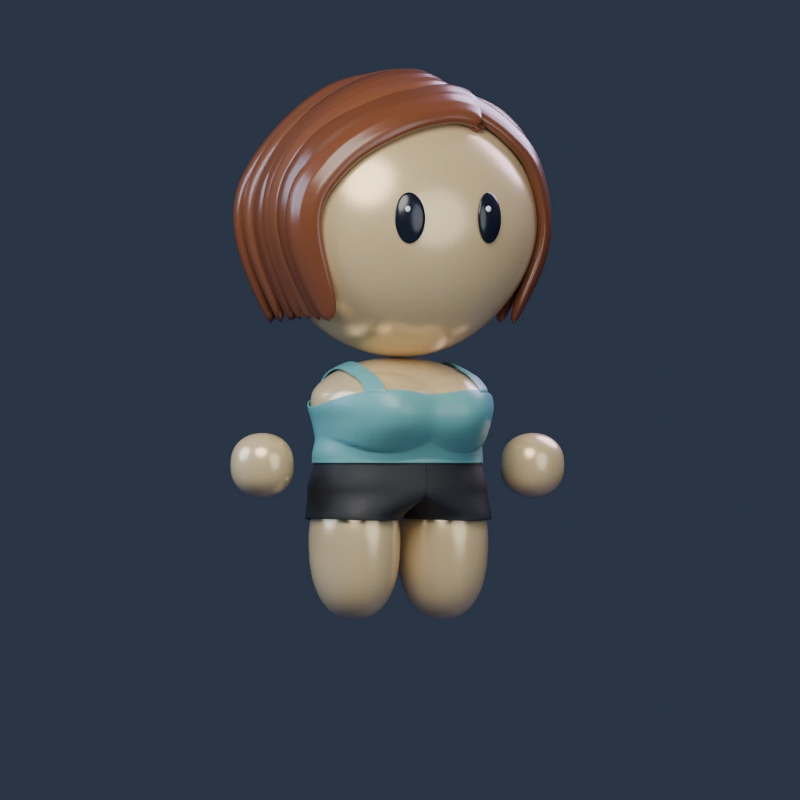
Blender reference · Tank / Black / Light warmLoad 3D or change a selection to mix outfits and rotate. Selections are remembered separately for each build.
The lighting and skin palette are unchanged. Bikini bottoms include a smooth hip-to-leg transition; other body shapes are retained. Static bottom references use Tank, Original eyes, Light warm skin and Black fabric. Live 3D shows your selected combination.
Four eyes, two treatments
Original, Round, Almond and Soft square. Soft square replaces Narrow; the broad dark pupils are a separate experiment.
Feminine
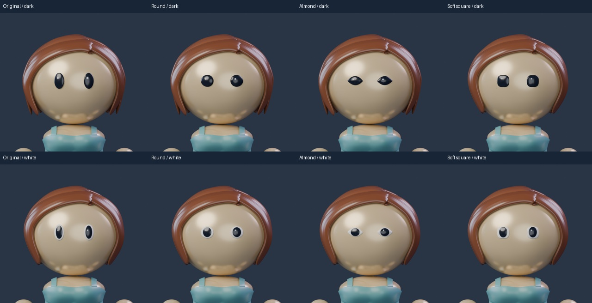
Masculine
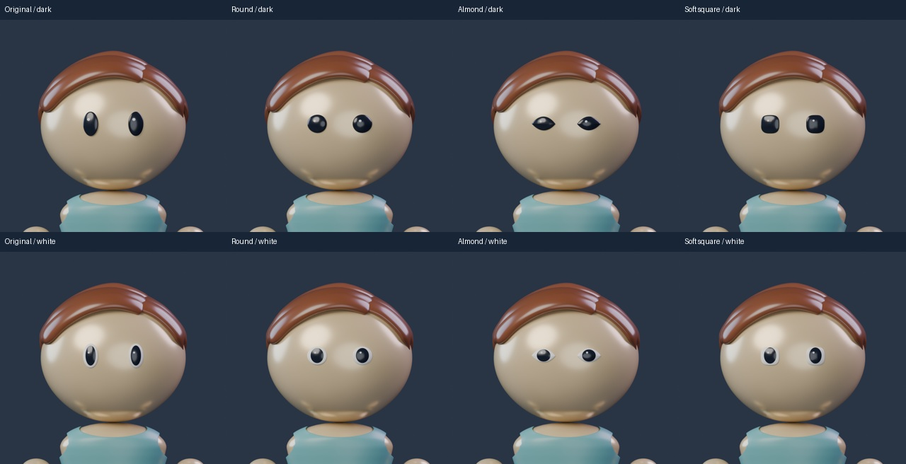
Bottoms
Men: Shorts and Pants. Women: Shorts, Skirt, Bikini bottoms and Flared pants. Eight shared colors: Black, White, Gray, Navy, Blue, Khaki, Red and Pink.
Feminine
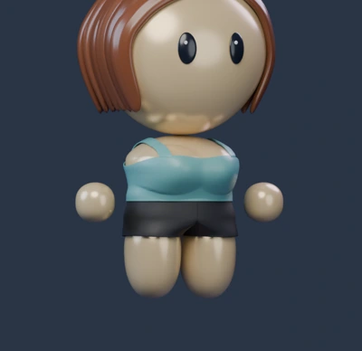
Shorts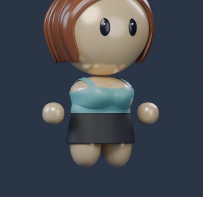
Skirt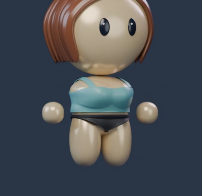
Bikini bottoms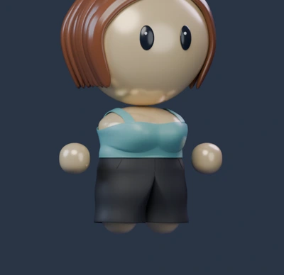
Flared pantsMasculine
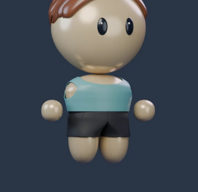
Shorts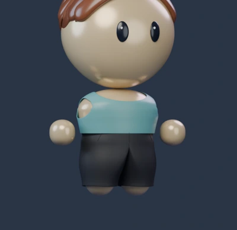
PantsMen’s tops
A longer T-shirt and a closed Button-up with a seated collar, buttons and chest pocket. The feminine Open shirt remains available.
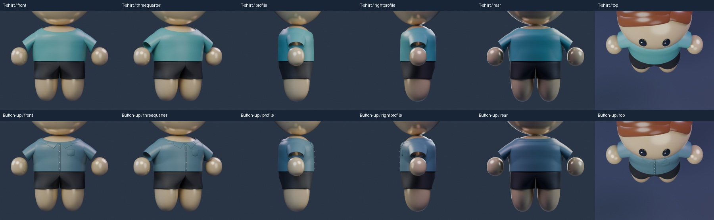
Hair corrections · before and after
Localized side/rear overlap and tip corrections. Existing sculpted locks and materials are retained.
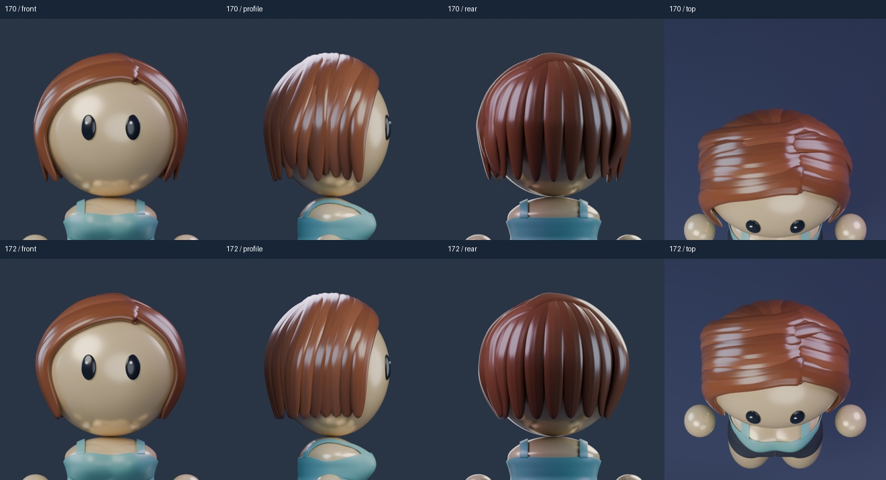
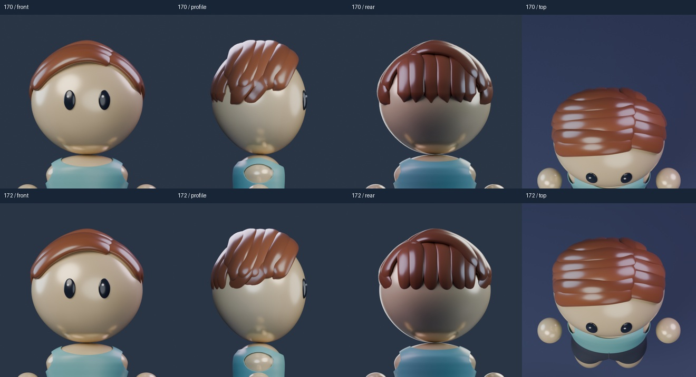
Bottoms · six-angle review
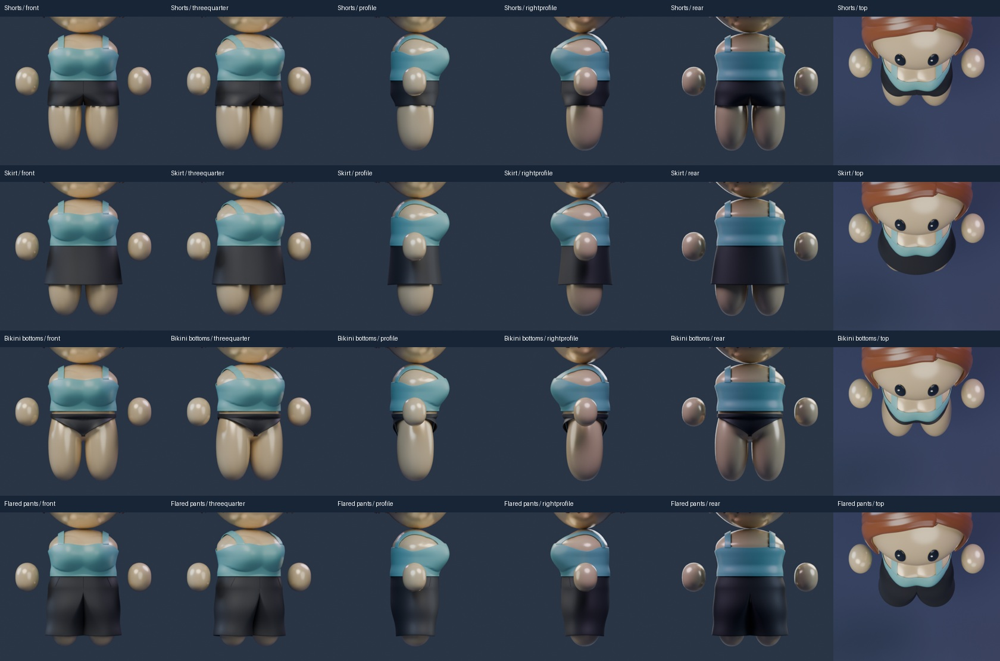
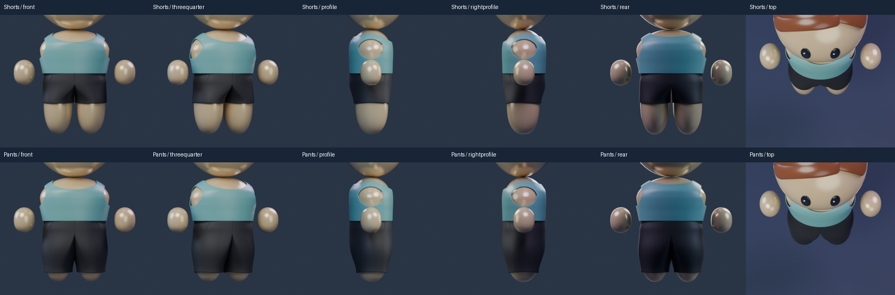
Every outfit · front, side and back
42 supported combinations, reviewed using actual geometry and materials.
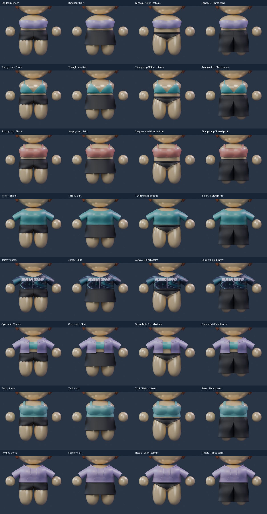
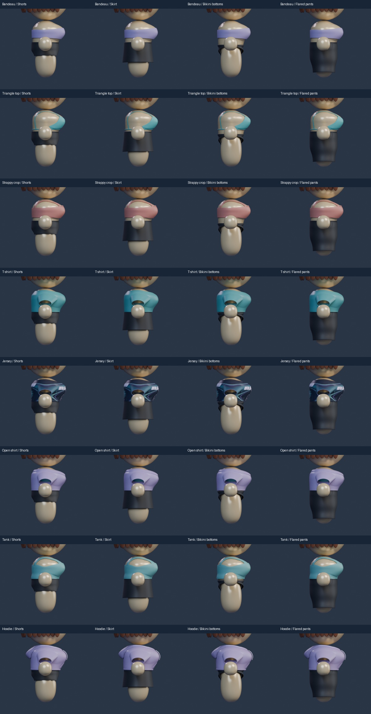
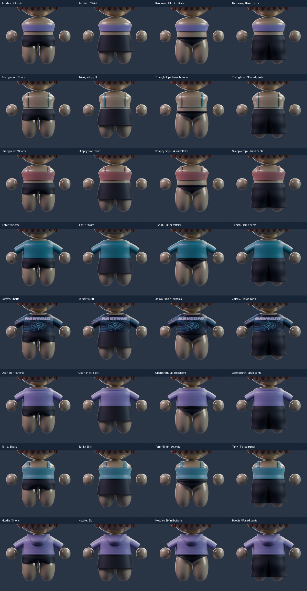
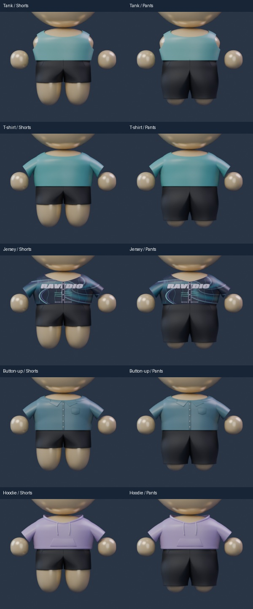
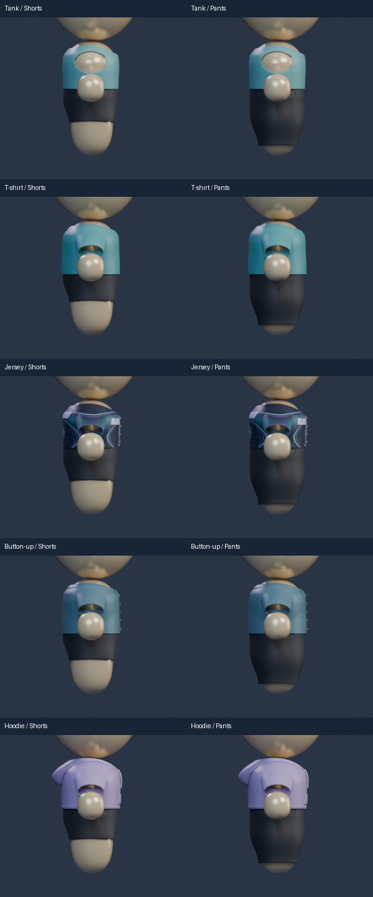
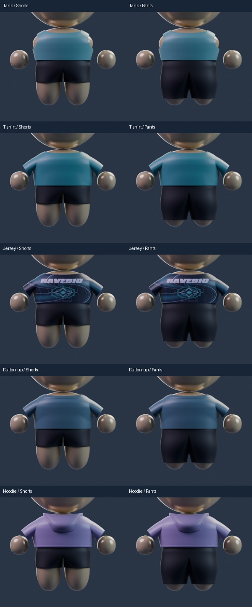
Scope and files
Local cartoon art candidates. New aliases and eye finish are not assignments to profile bits. Human master, Avatar Studio and all firmware/mobile/cloud contracts remain unchanged. Individual references are 1024px Cycles renders; outfit checks are 448px. Owner acceptance and physical-phone performance remain separate from self-review.
Construction references: UNIQLO short-sleeve shirt and Freedom Rave Wear high-waisted bottoms. Silhouettes are simplified to fit the existing characters.